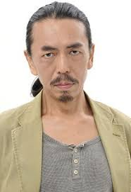

Seiji Sasaki is a Japanese voice actor. He is affiliated Gekidan Subaru.
- Gender: Male
- Birthday: January 11, 1965
- Hometown: Saitama, Japan
| |
Seiji Sasaki is a Japanese voice actor. He is affiliated Gekidan Subaru.
|
 |
|---|
 |
Sig Curtis |
|
Sig Curtis is the husband of Izumi Curtis. He is an enormous muscular man who works as a butcher in the town of Dublith. He cares deeply for Izumi and the Elrics brothers. He dislikes the military. |